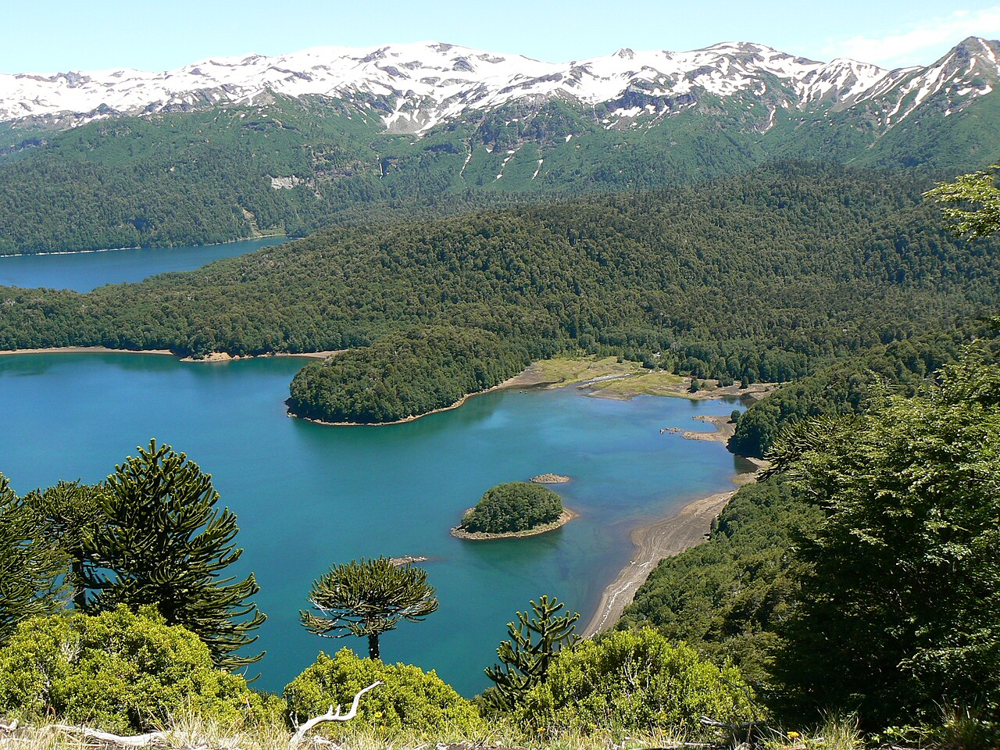

mukesh | 2min read | 12-03-2024

Extensive forests, formed mainly by Araucarias and Nothofagus species, and small lakes increase the scenic beauty of the park.
HISTORY
It was declared a national park in 1950. In 1983, the park, along with Alto Bío Bío National Reserve, was designated by UNESCO as a Biosphere Reserve, which is known as Araucarias Biosphere Reserve.
The national park lies within the wider Kütralkura Geopark, which was officially recognised as part of UNESCO's Global Geoparks Network on April 17, 2019
Rivers and watersports
onquimay River flows into the Biobío river. There is a fishing spot called the Truful Truful river, which is 25 km. to the north of Melipeuco. It crosses the volcanic scoria and drains into lake Conguillío. 14 km. from Melipeuco are the Saltos del Truful Truful, in a river where rainbow trout are abundant.
Swimming, rowing boats and fishing are allowed, along with motorized boats.
The Sierra Nevada volcano
There are 5 lookout points on the Sierra Nevada volcano. It is a long walk, of five to six hours, but efforts are awarded with the panoramic view obtained from this height, for the flight of the condor or the Vista of the beginning point of the Blanco River.
Hiking
If you enter Conguillío National Park by the sector of the Captrén lagoon, on the road from Curacautín, there is a footpath that surrounds the entire lagoon and its extension is of 1.24 miles approximately. It is a long but light walk, apt for experience and inexperienced walkers.
In the Captrén lagoon it is possible to fish, but it is prohibited to swim or to sail in boat, since it is a sanctuary of birds and this type of intervention can affect local species that inhabit there.